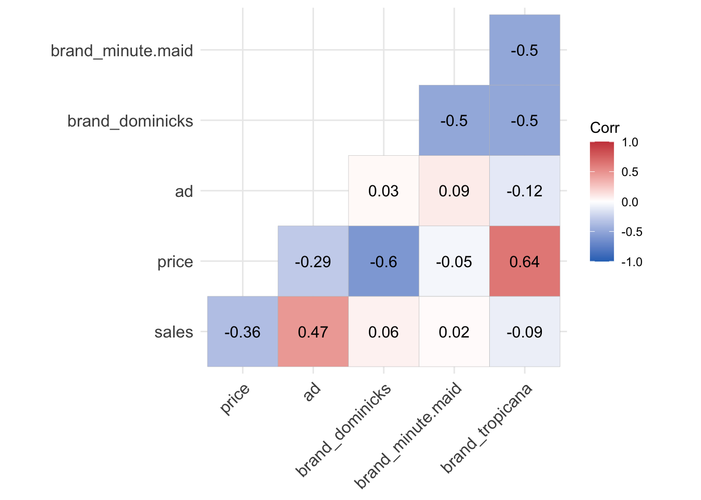
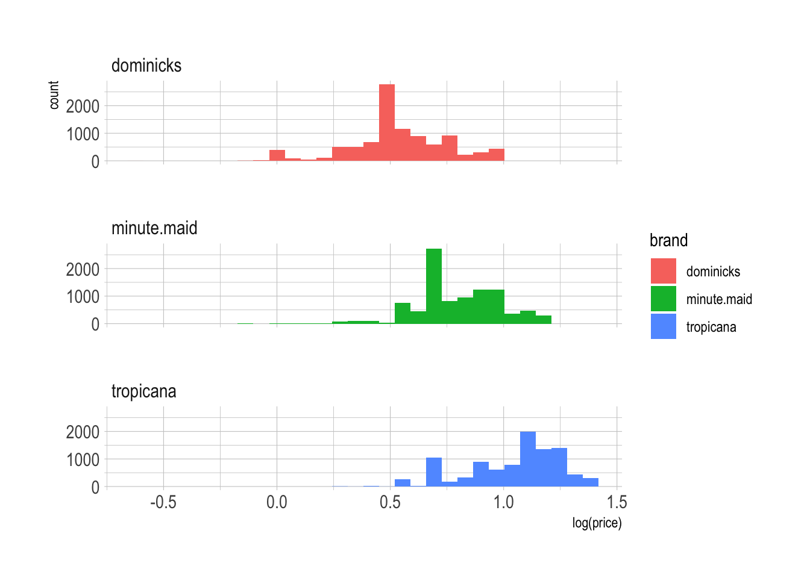
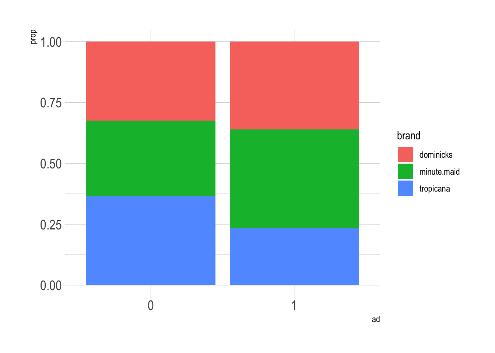
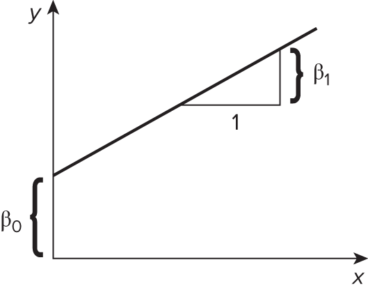
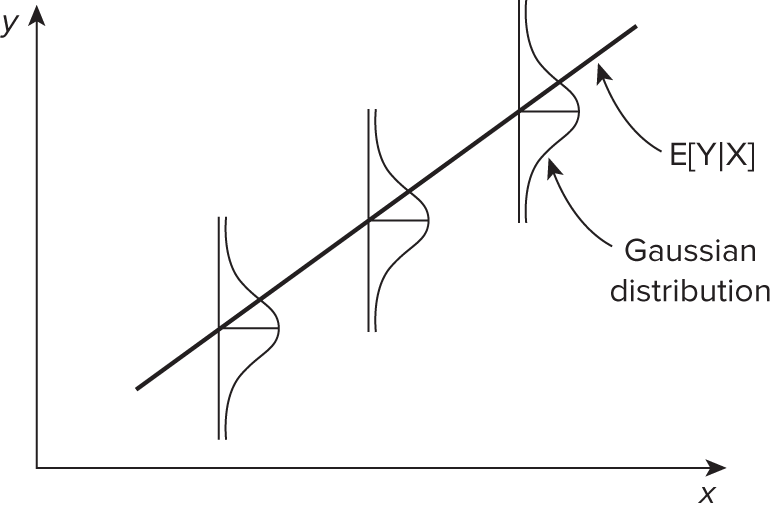
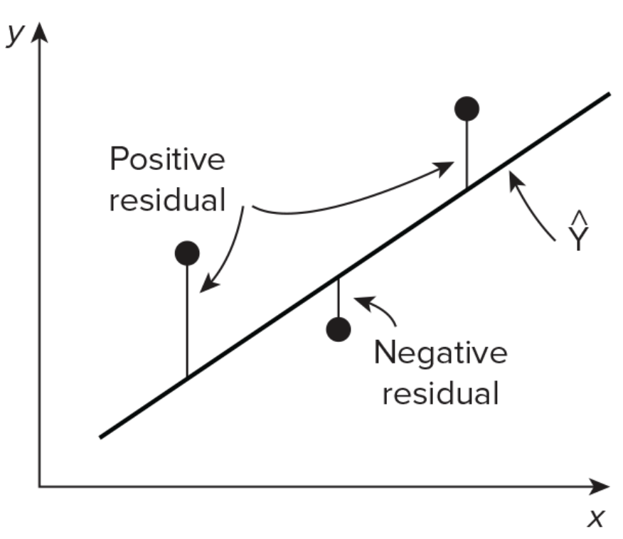
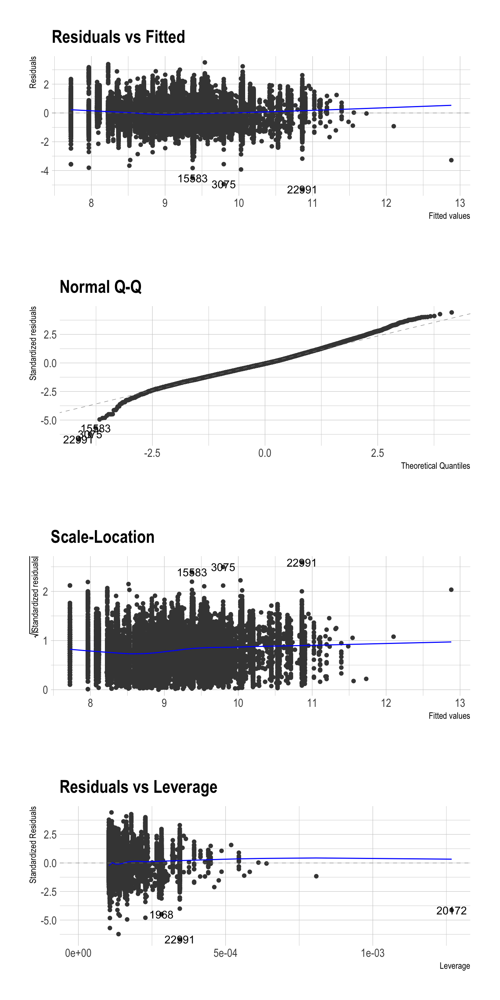

library(tidyverse)
library(skimr)
library(ggfortify) # to create regression-related plots
library(ggcorrplot) # to create correlation heatmaps
library(fastDummies) # to create dummy variables
library(stargazer) # to create regression tables
oj <- read_csv('https://bcdanl.github.io/data/dominick_oj.csv')Linear Regression
Machine Learning Lab
Loading Packages and Data
Exploratory Data Analysis
Descriptive Statistics
skim(oj)| Name | oj |
| Number of rows | 28947 |
| Number of columns | 4 |
| _______________________ | |
| Column type frequency: | |
| character | 1 |
| numeric | 3 |
| ________________________ | |
| Group variables | None |
Variable type: character
| skim_variable | n_missing | complete_rate | min | max | empty | n_unique | whitespace |
|---|---|---|---|---|---|---|---|
| brand | 0 | 1 | 9 | 11 | 0 | 3 | 0 |
Variable type: numeric
| skim_variable | n_missing | complete_rate | mean | sd | p0 | p25 | p50 | p75 | p100 | hist |
|---|---|---|---|---|---|---|---|---|---|---|
| sales | 0 | 1 | 17312.21 | 27477.66 | 64.00 | 4864.00 | 8384.00 | 17408.00 | 716416.00 | ▇▁▁▁▁ |
| price | 0 | 1 | 2.28 | 0.65 | 0.52 | 1.79 | 2.17 | 2.73 | 3.87 | ▁▆▇▅▂ |
| ad | 0 | 1 | 0.24 | 0.43 | 0.00 | 0.00 | 0.00 | 0.00 | 1.00 | ▇▁▁▁▂ |
oj %>% group_by(brand) %>%
skim()| Name | Piped data |
| Number of rows | 28947 |
| Number of columns | 4 |
| _______________________ | |
| Column type frequency: | |
| numeric | 3 |
| ________________________ | |
| Group variables | brand |
Variable type: numeric
| skim_variable | brand | n_missing | complete_rate | mean | sd | p0 | p25 | p50 | p75 | p100 | hist |
|---|---|---|---|---|---|---|---|---|---|---|---|
| sales | dominicks | 0 | 1 | 19834.56 | 32245.47 | 64.00 | 4416.00 | 9152.00 | 21056.00 | 716416.00 | ▇▁▁▁▁ |
| sales | minute.maid | 0 | 1 | 18238.46 | 29992.21 | 320.00 | 4800.00 | 8320.00 | 18560.00 | 591360.00 | ▇▁▁▁▁ |
| sales | tropicana | 0 | 1 | 13863.62 | 17515.82 | 192.00 | 5248.00 | 8000.00 | 13824.00 | 288384.00 | ▇▁▁▁▁ |
| price | dominicks | 0 | 1 | 1.74 | 0.39 | 0.52 | 1.58 | 1.59 | 1.99 | 2.69 | ▁▂▇▃▂ |
| price | minute.maid | 0 | 1 | 2.24 | 0.40 | 0.88 | 1.99 | 2.17 | 2.49 | 3.17 | ▁▂▇▆▂ |
| price | tropicana | 0 | 1 | 2.87 | 0.55 | 1.29 | 2.49 | 2.99 | 3.19 | 3.87 | ▁▃▅▇▅ |
| ad | dominicks | 0 | 1 | 0.26 | 0.44 | 0.00 | 0.00 | 0.00 | 1.00 | 1.00 | ▇▁▁▁▃ |
| ad | minute.maid | 0 | 1 | 0.29 | 0.45 | 0.00 | 0.00 | 0.00 | 1.00 | 1.00 | ▇▁▁▁▃ |
| ad | tropicana | 0 | 1 | 0.17 | 0.37 | 0.00 | 0.00 | 0.00 | 0.00 | 1.00 | ▇▁▁▁▂ |
oj %>% group_by(brand, ad) %>%
skim()| Name | Piped data |
| Number of rows | 28947 |
| Number of columns | 4 |
| _______________________ | |
| Column type frequency: | |
| numeric | 2 |
| ________________________ | |
| Group variables | brand, ad |
Variable type: numeric
| skim_variable | brand | ad | n_missing | complete_rate | mean | sd | p0 | p25 | p50 | p75 | p100 | hist |
|---|---|---|---|---|---|---|---|---|---|---|---|---|
| sales | dominicks | 0 | 0 | 1 | 11733.91 | 15718.77 | 64.00 | 3584.00 | 7040.00 | 13312.00 | 248000.00 | ▇▁▁▁▁ |
| sales | dominicks | 1 | 0 | 1 | 43251.33 | 50930.45 | 64.00 | 11888.00 | 27744.00 | 54160.00 | 716416.00 | ▇▁▁▁▁ |
| sales | minute.maid | 0 | 0 | 1 | 8372.65 | 7701.69 | 320.00 | 4160.00 | 6272.00 | 9984.00 | 231808.00 | ▇▁▁▁▁ |
| sales | minute.maid | 1 | 0 | 1 | 42566.32 | 46260.27 | 1728.00 | 16576.00 | 29440.00 | 49808.00 | 591360.00 | ▇▁▁▁▁ |
| sales | tropicana | 0 | 0 | 1 | 10038.86 | 10246.02 | 192.00 | 4864.00 | 7168.00 | 11008.00 | 175872.00 | ▇▁▁▁▁ |
| sales | tropicana | 1 | 0 | 1 | 33047.02 | 29632.94 | 1408.00 | 10816.00 | 23808.00 | 46896.00 | 288384.00 | ▇▂▁▁▁ |
| price | dominicks | 0 | 0 | 1 | 1.80 | 0.38 | 0.52 | 1.58 | 1.69 | 1.99 | 2.69 | ▁▂▇▅▂ |
| price | dominicks | 1 | 0 | 1 | 1.56 | 0.34 | 0.89 | 1.39 | 1.58 | 1.59 | 2.69 | ▂▇▂▁▁ |
| price | minute.maid | 0 | 0 | 1 | 2.33 | 0.41 | 0.88 | 1.99 | 2.26 | 2.62 | 3.17 | ▁▂▇▇▃ |
| price | minute.maid | 1 | 0 | 1 | 2.02 | 0.30 | 0.99 | 1.99 | 1.99 | 2.19 | 2.81 | ▁▂▇▂▂ |
| price | tropicana | 0 | 0 | 1 | 2.97 | 0.51 | 1.32 | 2.59 | 2.99 | 3.39 | 3.87 | ▁▂▃▇▅ |
| price | tropicana | 1 | 0 | 1 | 2.39 | 0.46 | 1.29 | 1.99 | 2.39 | 2.79 | 3.59 | ▁▇▆▅▂ |
Data Visualization
- Correlation heatmap is a great tool to start identifying which input variables are strongly correlated with an outcome variable.
# to convert a factor variable into indicators
oj_dummies <- dummy_cols(oj, select_columns = 'brand' ) %>%
select(-brand)
# the matrix of the correlation test p-values
p.mat <- cor_pmat(oj_dummies)
# correlation heatmap with correlation values
ggcorrplot( cor(oj_dummies), lab = T,
type = 'lower',
colors = c("#2E74C0", "white", "#CB454A"),
p.mat = p.mat) # p.values
# variation in log price
ggplot(oj, aes(x = log(price), fill = brand )) +
geom_histogram() +
facet_wrap(brand ~., ncol = 1)
# variation in log sales
ggplot(oj, aes(x = log(sales), fill = brand )) +
geom_histogram() +
facet_wrap(brand ~., ncol = 1)
# law of demand
p <- ggplot(oj, aes(x = log(sales), y = log(price),
color = brand ))
p + geom_point( alpha = .025 ) +
geom_smooth(method = lm, se = F)
# mosaic plot
ggplot(data = oj) +
geom_bar(aes(x = as.factor(ad), y = after_stat(prop),
group = brand, fill = brand),
position = "fill") +
labs(x = 'ad') +
theme(plot.title = element_text(size = rel(1.5)),
axis.title = element_text(size = 25),
axis.text.x = element_text(size = rel(1.5)),
axis.text.y = element_text(size = rel(1.5)))
Linear Regression Model
A basic but powerful regression strategy is to deal in averages and lines.
- We model the conditional mean for \(y\) given \(x\) as
\[ \begin{align} \mathbb{E}[\, y \,|\, \mathbf{X} \,] &= \beta_{0} \,+\, \beta_{1}\,x_{1} \,+\, \cdots \,+\, \beta_{p}\,x_{p}\\ { }\\ y_{i} &= \beta_{0} \,+\, \beta_{1}\,x_{1, i} \,+\, \cdots \,+\, \beta_{p}\,x_{p, i} + \epsilon_{i} \quad \text{for } i = 1, 2, ..., n \end{align} \] - Linear regression is used to model linear relationship between an outcome variable, \(y\), and a set of predictor variables \(x_{1}, \,\cdots\,, x_{p}\).
knitr::include_graphics('lec_figs/mba-1-2.png')
- \(\beta_{0}\) is an intercept when \(\mathbf{X} = \mathbf{0}\).
- \(\beta_{1}\) is a slope that describes a change in average value for \(y\) for each one-unit increase in \(x_{1}\).
- \(\epsilon_{i}\) is the random noise.
- For inference, we need to assume that \(\epsilon_{i}\) is independent, identically distributed (iid) from Normal distribution.
\[ \epsilon_i \overset{iid}{\sim}N(0, \sigma^2) \quad \text{ with constant variance } \sigma^2 \]
knitr::include_graphics('lec_figs/mba-1-3.png')
Fitted Line and Beta Estimates
- We estimatede the best fitting line by ordinary least squares (OLS) - by minimizing the sum of squared errors (SSE)
\[ S S E\left(\beta_{0}, \beta_{1}\right)=\sum_{i=1}^{n}\left[Y_{i}-\left({\beta}_{0}+{\beta}_{1} X_{i}\right)\right]^{2} \]
knitr::include_graphics('lec_figs/mba-1-9.png')
Therefore, the beta estimate has the following solution:
\[ \widehat{\beta}_{1}=\frac{\sum_{i=1}^{n}\left(X_{i}-\bar{X}\right)\left(Y_{i}-\bar{Y}\right)}{\sum_{i=1}^{n}\left(X_{i}-\bar{X}\right)^{2}} \quad \text{ and } \quad \widehat{\beta}_{0}=\bar{Y}-\widehat{\beta}_{1} \bar{X} \]
where \(\bar{X} = \frac{1}{n}\sum_{i=1}^n X_i\) and \(\bar{Y} = \frac{1}{n}\sum_{i=1}^n Y_i\)
Connection to covariance and correlation
- Covariance describes the joint variability of two variables
\[ \text{Cov}(X, Y) = \sigma_{X,Y} = \mathbb{E}[(X-\mathbb{E}[X])(Y-\mathbb{E}[Y])] \]
- Correlation is a normalized form of covariance, ranges from -1 to 1
\[ \rho_{X,Y} = \frac{\text{Cov}(X,Y)}{\sigma_X \cdot \sigma_Y} \] - So, the beta coefficent can be represented by:
$$ \[\begin{align} \widehat{\beta}_{1} &= \, \frac{\widehat{\text{Cov}}(X,Y)}{\widehat{\text{Var}}(X)} \,=\, \hat{\rho}_{x,y} \cdot \frac{\hat{\sigma}_{Y}}{\hat{\sigma}_{X}} \end{align}\] $$
Inference with OLS
\(t\)-statistics are coefficients
Estimates/Std. Error, i.e., number of standard deviations from 0p-values (i.e.,
Pr(>|t|)): estimated probability observing value as extreme as |t value| given the null hypothesis \(\beta = 0\)p-value \(<\) conventional threshold of \(\alpha = 0.05\), sufficient evidence to reject the null hypothesis that the coefficient is zero,
Typically |
t values| \(> 2\) indicate significant relationship at \(\alpha = 0.05\)i.e., there is a significant association between
log(sales)andlog(price)
Controlling the Type 1 error rate at \(\alpha = 0.05\), i.e., the probability of a false positive mistake:
- 5% chance that you’ll conclude there’s a significant association between \(x\) and \(y\) even when there is none
R-squared
- \(R^2\) estimates the proportion of the variance of \(Y\) explained by \(X\).
Mean Squared Errors
- Mean squared error (MSE) is a commonly used metric to evaluate the performance of a regression model.
- It measures the average squared difference between the predicted values and the actual values in the dataset.
\[ M S E \,=\, \frac{\sum_{i = 1}^{ n}\,(\, y_{i} - \hat{y}_{i} \,)^2}{n} \] - Root mean squared error (RMSE) is the square root of the mean squared error (MSE).
\[ R M S E \,=\, \sqrt{M S E} \] - RMSE shows how far predictions fall from true values.
The Goals of Linear Regression
- Modeling for prediction (\(\hat{y}\)): When we want to predict an outcome variable \(y\) based on the information contained in a set of predictor variables \(\mathbf{X}\).
- We are estimating the conditional expection (mean) for \(y\): \[ \mathbb{E}[\, y \,|\, \mathbf{X} \,] = \beta_{0} \,+\, \beta_{1}\,x_{1} \,+\, \cdots \,+\, \beta_{p}\,x_{p}. \]
- which is the average value for \(y\) given the value for \(X\).
- Modeling for explanation (\(\hat{\beta}\)): When we want to explicitly describe and quantify the relationship between the outcome variable \(y\) and a set of explanatory variables \(\mathbf{X}\).
- Correlation does not imply causation.
- Without proper identification strategies, \(\beta_{1}\) just means a correlation between \(x_{1}\) and \(y\).
- However, we can possibly identify a causal relationship between the explanatory variable and the outcome variable.
Linear Regression and Controls
Simple Linear Regression
To start, we can fit a simple model that regresses log price on log sales.
\[
\mathbb{E}[\, \log(\, \texttt{sales} \,) \,|\, \texttt{price}\,] = \alpha \,+\, \beta\, \log(\,\texttt{price}\,)
\] - The following model incorporates both brand and price:
\[ \mathbb{E}[\, \log(\, \texttt{sales} \,) \,|\, \texttt{price}\,] = \alpha_{\texttt{brand}} \,+\, \beta\, \log(\,\texttt{price}\,) \]
formula_0 <- log(sales) ~ log(price)
formula_1 <- log(sales) ~ brand + log(price)
fit_0 <- lm( formula_0, data = oj )
fit_1 <- lm( formula_1, data = oj )
stargazer(fit_0, fit_1, type = "html")| Dependent variable: | ||
| log(sales) | ||
| (1) | (2) | |
| brandminute.maid | 0.870*** | |
| (0.013) | ||
| brandtropicana | 1.530*** | |
| (0.016) | ||
| log(price) | -1.601*** | -3.139*** |
| (0.018) | (0.023) | |
| Constant | 10.423*** | 10.829*** |
| (0.015) | (0.015) | |
| Observations | 28,947 | 28,947 |
| R2 | 0.208 | 0.394 |
| Adjusted R2 | 0.208 | 0.394 |
| Residual Std. Error | 0.907 (df = 28945) | 0.794 (df = 28943) |
| F Statistic | 7,608.212*** (df = 1; 28945) | 6,275.074*** (df = 3; 28943) |
| Note: | p<0.1; p<0.05; p<0.01 | |
We know that there are different brands of OJ here and some are more valuable than others.
- When we control for brand effect, the elasticity estimate nearly doubles to −3.14.
The premium brands, Minute Maid and Tropicana, had equivalent sales to Dominick’s at higher price points.
So if we don’t control for brand, it looks as though prices can rise without affecting sales for those observations.
- This dampens the observable relationship between prices and sales and results in the (artificially) low elasticity estimate of −1.6.
More mechanically, how does this happen in regression?
price_fit <- lm(log(price) ~ brand, data = oj)
p_hat <- predict(price_fit, newdata = oj)
p_resid <- log(oj$price) - p_hat
# regress log sales on p_resid
resid_fit <- lm(log(sales) ~ p_resid, data = oj)
# What is the beta coefficient for p_resid?!
round( coef(resid_fit)[2], digit = 3 )p_resid
-3.139 The coefficient on
p_resid, the residuals from regression of log price on brand, is exactly the same as what we get onlog(price)in the multiple linear regression for log sales onto this and brand!This is one way that you can understand what OLS is doing:
- It is finding the coefficients on the part of each input that is independent from the other inputs.
Controls in Linear Regression
- Omitted variable bias is a type of bias that can occur in linear regression when an important variable that is related to both the outcome variable and the input variable(s) is not included in the model.
- This omission can lead to biased estimates of the beta coefficients of the included input variables.
- In linear regression, a confounding variable is a variable that is related to both treatment and outcome variables, and that affects the relationship between them.
- A treatment variable is an input variable that the researcher believes has a causal effect on the outcome variable.
- When a confounding variable is not controlled in the regression model, it can lead to biased estimates of the relationship between the independent and treatment variables.
- Bad controls in linear regression refer to the inclusion of variables in the model that do not actually control for the confounding factors they are intended to control for.
- This can lead to biased estimates of the relationship between the independent and dependent variables.
# simulation data
tb <- tibble(
female = ifelse(runif(10000)>=0.5,1,0), # female indicator variable
ability = rnorm(10000), # e.g., talent, usually unobserved.
discrimination = female, # gender discrimination variable
occupation = 1 + 2*ability + 0*female - 2*discrimination + rnorm(10000), # true data generating process for occupation variable
wage = 1 - 1*discrimination + 1*occupation + 2*ability + rnorm(10000) # true data generating process for wage variable
)
lm_1 <- lm(wage ~ female, tb)
lm_2 <- lm(wage ~ female + occupation, tb)
lm_3 <- lm(wage ~ female + occupation + ability, tb)
stargazer(lm_1,lm_2,lm_3,
column.labels = c("Biased Unconditional",
"Biased",
"Unbiased Conditional"),
type = 'html')| Dependent variable: | |||
| wage | |||
| Biased Unconditional | Biased | Unbiased Conditional | |
| (1) | (2) | (3) | |
| female | -2.934*** | 0.590*** | -1.005*** |
| (0.084) | (0.029) | (0.028) | |
| occupation | 1.793*** | 0.993*** | |
| (0.006) | (0.010) | ||
| ability | 2.007*** | ||
| (0.023) | |||
| Constant | 1.957*** | 0.203*** | 0.993*** |
| (0.059) | (0.020) | (0.017) | |
| Observations | 10,000 | 10,000 | 10,000 |
| R2 | 0.108 | 0.910 | 0.950 |
| Adjusted R2 | 0.108 | 0.910 | 0.950 |
| Residual Std. Error | 4.221 (df = 9998) | 1.340 (df = 9997) | 1.002 (df = 9996) |
| F Statistic | 1,207.456*** (df = 1; 9998) | 50,566.560*** (df = 2; 9997) | 62,964.220*** (df = 3; 9996) |
| Note: | p<0.1; p<0.05; p<0.01 | ||
occupationis a bad control.
Residual plot, QQ plot, and Residual vs Leverage plot
Residuals should NOT display any systematic pattern.
Check the assumptions about normality with a QQ plot using
ggfortify.
library(ggfortify)
autoplot(fit_1, ncol = 1)
Standardized residuals = residuals
/ sd(residuals)A QQ (Quantile-Quantile) plot is a graphical tool used to assess the normality of a distribution.
- In the context of linear regression, a QQ plot can be used to assess whether the residuals are normally distributed.
- A QQ plot visualizes the relationship between the quantiles of the residuals and the quantiles of a theoretical normal distribution.
- QQ plots can be useful in identifying potential outliers or influential observations in a linear regression model, as well as in deciding whether to transform the dependent variable or use a different type of regression model altogether.
A residual vs leverage plot is a graphical tool used to detect influential observations in linear regression.
- Leverage refers to how much an observation’s independent variables differ from the mean of the independent variables, and is a measure of how much influence that observation has on the regression line.
- In a residual vs leverage plot, influential observations will typically appear as points that are far away from the center of the plot.
- If an observation has high leverage but a small residual, it may not be influential.
- Conversely, an observation with a large residual but low leverage may also not be influential.
Exercise
Consider the orange juice models:
formula_0 <- log(sales) ~ log(price)
formula_1 <- log(sales) ~ brand + log(price)
fit_0 <- lm( formula_0, data = oj )
fit_1 <- lm( formula_1, data = oj )Draw a residual plot for each model of
fit_0andfit_1.Calculate the RMSE for each model of
fit_0andfit_1.Review the interaction models:
formula_0 <- log(sales) ~ log(price)
formula_1 <- log(sales) ~ brand + log(price)
formula_2 <- log(sales) ~ brand * log(price)
formula_3 <- log(sales) ~ brand * ad * log(price)
fit_0 <- lm( formula_0, data = oj )
fit_1 <- lm( formula_1, data = oj )
fit_2 <- lm( formula_2, data = oj )
fit_3 <- lm( formula_3, data = oj )
stargazer(fit_1, fit_2, fit_3, type = "html")| Dependent variable: | |||
| log(sales) | |||
| (1) | (2) | (3) | |
| brandminute.maid | 0.870*** | 0.888*** | 0.047 |
| (0.013) | (0.042) | (0.047) | |
| brandtropicana | 1.530*** | 0.962*** | 0.708*** |
| (0.016) | (0.046) | (0.051) | |
| ad | 1.094*** | ||
| (0.038) | |||
| log(price) | -3.139*** | -3.378*** | -2.774*** |
| (0.023) | (0.036) | (0.039) | |
| brandminute.maid:ad | 1.173*** | ||
| (0.082) | |||
| brandtropicana:ad | 0.785*** | ||
| (0.099) | |||
| brandminute.maid:log(price) | 0.057 | 0.783*** | |
| (0.057) | (0.061) | ||
| brandtropicana:log(price) | 0.666*** | 0.736*** | |
| (0.054) | (0.057) | ||
| ad:log(price) | -0.471*** | ||
| (0.074) | |||
| brandminute.maid:ad:log(price) | -1.109*** | ||
| (0.122) | |||
| brandtropicana:ad:log(price) | -0.986*** | ||
| (0.124) | |||
| Constant | 10.829*** | 10.955*** | 10.407*** |
| (0.015) | (0.021) | (0.023) | |
| Observations | 28,947 | 28,947 | 28,947 |
| R2 | 0.394 | 0.398 | 0.535 |
| Adjusted R2 | 0.394 | 0.398 | 0.535 |
| Residual Std. Error | 0.794 (df = 28943) | 0.791 (df = 28941) | 0.695 (df = 28935) |
| F Statistic | 6,275.074*** (df = 3; 28943) | 3,823.404*** (df = 5; 28941) | 3,031.232*** (df = 11; 28935) |
| Note: | p<0.1; p<0.05; p<0.01 | ||